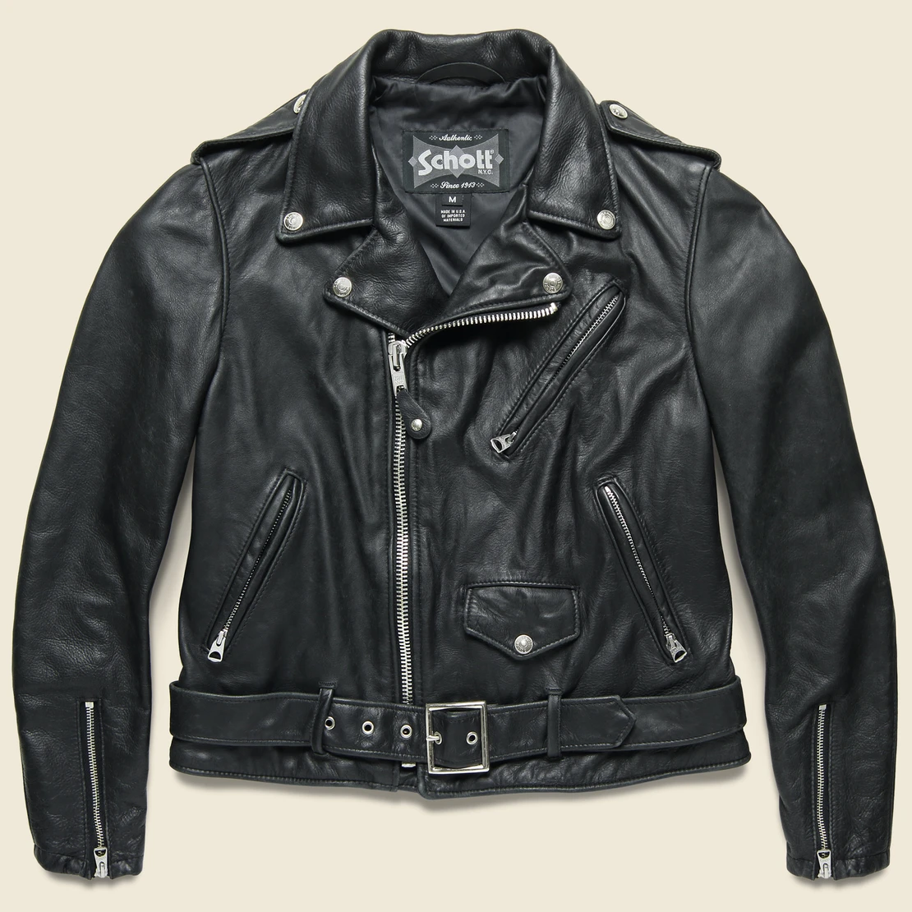

☰
About
Share
Follow
Perfecto

The Ramones are among the most iconic wearers of the perfecto.
The Ramones are among the most iconic wearers of the perfecto.
Hedi Slimane pioneered a lux version of the biker jacket.